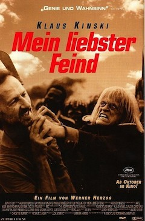

Werner Herzog
1999
95 minutes
TITLE: My Best Fiend TEXT PLACEHOLDER 012
This film is a good reminder to you of your ten-percent/one-percent theory of assholes and psychopaths, which you developed when you were driving a cab.
Ninety percent of people are basically Harmless. That's not to say they're pleasant. Anyone can be unpleasant if you catch them on a bad day, and during bad times most of the people you encounter may be very unpleasant. But when push comes to shove they are harmless and easy to ignore. You can make small talk with the nice people or just ignore them. When the nasty people are unpleasant, you can snarl back at them or, again, just ignore them. Klaus Kinski is not one of these people, obviously.
Ten percent of people, however, are Assholes. One in ten are going to be a problem of some sort that may require some attention. They have the potential to make things difficult for you. That's not to say they may cause you actual harm. Most of these pricks are fairly harmless as well. But diplomacy may be required to keep the Assholes from causing problems for you or making a scene or saying or doing something that will be damaging to your ego or ruin your otherwise good mood. Thick skin is required if you have to deal with assholes like this regularly. This is a necessity for anyone who works anywhere near the service industry. Klaus Kinski falls solidly within this category.
Most of this ten percent of Assholes are noxious and can easily ruin your day. However, if you're an even bigger asshole then they are the kind of people you can sharpen your own claws on for sport, which can often be very satisfying. And at worst this lot will ruin your day, but unless you completely flub an encounter with them, there won't be any catastrophic damage. Prolonged exposure can certainly wear on you though, so don't dismiss them too lightly.
However, this subgroup also contains the one percent of the population that you would properly classify as Psychopaths. These are the people who are actually dangerous. These are the people who can actually really do you harm, physical or otherwise, if you don't deal with them carefully. They may take a swing at you, they may try to get you fired, they may try to do something to you that will do lasting damage if you don't deal with them properly. They may be irrational and their reactions to anything you do may be disproportionate. And dealing with them without incurring any lasting damage may mean prioritizing your safety over your comfort or your ego. This lot is completely toxic and has a high likelihood of ruining your day regardless of how you handle them. It's the difference between a stray dog crapping on your lawn versus a rabid dog snarling at you on your porch while you're trying to get your mail.
You've encountered plenty of people in this category over the course of your life. You easily recognize that Klaus Kinski is solidly in this category. And it's funny from a distance but you imagine it's pretty intense up close and personal...
Time to choose something different: